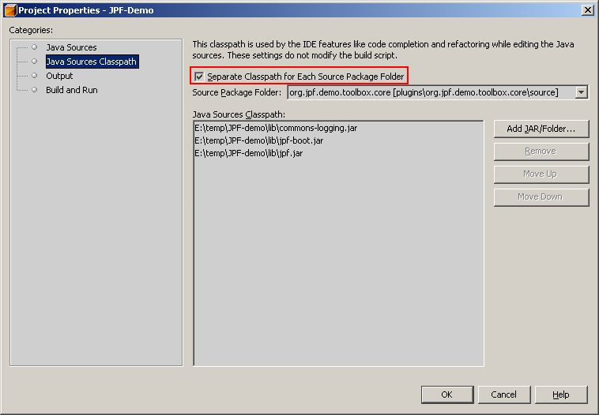

JPF-Demo as Project in Netbeans IDE
Note: for simplicity and concreteness, instructions prepared for JPF-Demo project but applicable to any JPF based application.
Preface
Download ZIP archive with JPF-Demo source code and unpack it into some location. This location will be the project "root" folder. Following instructions are created for Netbeans IDE version 5.0 but similar steps applicable to earlier versions also.
Note: JPF-Demo source distribution package already contains project files for Netbeans IDE - nbproject folder. You have to remove this folder if you want to go through steps in this tutorial. But for quick start with JPF-Demo source code simply open provided project in Netbeans IDE.
Creating Project
Before creating project in Netbeans IDE you should already get somewhere the Ant build script for your project. For the beginning, this might be quite rudimentary script file without any useful targets defined, but it is needed as starting point for Netbeans free-form project. Later you will be able to improve it adding more targets. JPF-Demo project already contains such build script so you don't need to worry about it.
Open Netbeans New Project dialogue and select General category and Java Project with Existing Ant Script project type in the wizard.

On the next step you have to select project location. This should be folder that contains project build script - build.xml file.

On the next step you have to map targets from build.xml file to IDE actions. For JPF-Demo project no changes required, Netbeans maps most found targets to standard IDE actions automatically.

Next step in wizard is quite important - you have to tell Netbeans about all source folders in your project. For JPF based application usually every plug-in has it's own separate source folder. You should provide them all here.

Now press Finish button.

The first phase of project configuring is done. You'll see newly created project in the IDE. Before continue, you need to build project. This makes all necessary class folders that we later will use when informing IDE about our project classpath.

Now open project properties dialog window. On the first category Java Sources it is recommended to provide meaningful labels for plug-in sources. Plug-in ID is good candidate for such label.

On the Java Sources Classpath category you have to provide classpath entries for every source folder. Note that these classpath entires will be used by IDE code completion and refactoring tools but not for classes compiling and running.

On the Output category you have to provide outputs for for every source folder. This info will be used by debugger and by IDE for inter-project dependencies.

The last Build and Run category allow you to configure mappings between Ant build script targets and IDE actions. Here you may provide additional actions configuration.

Now you are ready to work with project in Netbeans IDE.
Run/Debug Configuration
Running configured project in Netbeans IDE is very simple. All magic done in project Ant build script. Simply press Run button that will call mapped Ant target.
Debugging is also very easy task. Press Debug button. In the first time IDE suggest you create corresponding Ant target and map it to the debug action. Answer yes to all questions. Netbeans IDE will generate target automatically basing on the run target. No manual modifications usually required.
Here the result.